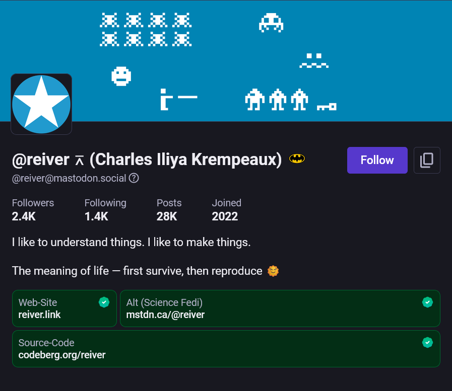
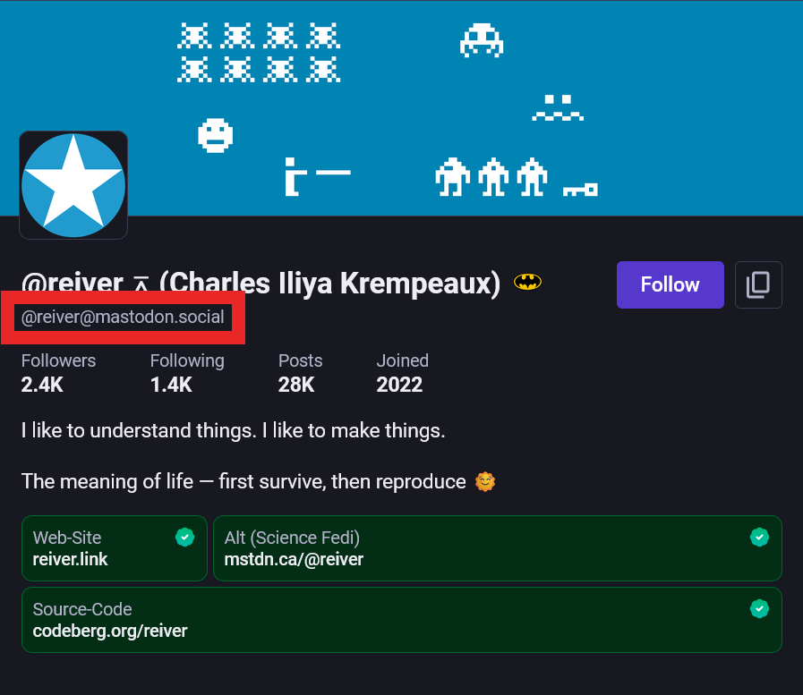

How to Fetch an ActivityPub Actor Profile: A Developer's Guide
Fediverse ID → acct-URI → WebFinger → "Accept: application/activity+json" + actor URL
This article probably could have also been calling:
Webfinger 101: How to resolve @user@domain.com to an ActivityPub profile URL
But anyway —
How do you get a Fediverse user's profile information using code‽ How (as an ActivityPub developers would say) do you get an ActivityPub actor's profile information? I.e., how do you go from a Fediverse ID like this:
@reiver@mastodon.social
To the information in this:

@reiver@mastodon.social profile from the mastodon.social web-site application.
With a centralized platform, there is a single API. But, the Fediverse (including Mastodon, Misskey, PeerTube, Pixelfed, and others) is made up of a set of distributed servers. There isn't a single API. There are many APIs. Which means that there is no single universal “user lookup endpoint”. Each Fedivese server has its own APIs.
Luckily, these many APIs look similar to each other — and, these many APIs all speak ActivityPub, WebFinger, etc.
Let's look at how this all works.
Step 1: Fediverse ID
It starts with a Fediverse ID.
A Fediverse ID (also sometimes called a Fediverse address) looks like these:
@joeblow@example.com@reiver@mastodon.social@dansup@pixelfed.social@bahmankas@reiver.link
This is what you see in various Fediverse applications. Whether these are mobile apps, or web-based applications.
You also saw a Fediverse ID in the previous screen-shot.

@reiver@mastodon.social profile from the mastodon.social web-site application with its Fediverse ID outlined with a red rectangle.
You many be thinking something like: these look like an e-mail address with an extra at-sign ("@") at the beginning. And, that is probably a good way to thinking about it.
Fediverse IDs begin with an at-sign ("@"), then there is the handle, then there is another at-sign ("@"), and then finally the host.
handle
↓↓↓↓↓↓
@reiver@mastodon.social
↑↑↑↑↑↑↑↑↑↑↑↑↑↑↑
host
Step 2: acct-URI
Step 2 is to turn the Fediverse ID (you got in step 1) into an acct-URI.
It is actually pretty easy to do. Here are some examples.
| Fediverse ID | acct-URI |
|---|---|
@joeblow@example.com |
acct:joeblow@example.com |
@reiver@mastodon.social |
acct:reiver@mastodon.social |
@dansup@pixelfed.social |
acct:dansup@pixelfed.social |
@bahmankas@reiver.link |
acct:bahmankas@reiver.link |
Notice, in these examples, that the only thing that changes in transforming a Fediverse ID to an acct-URI is changing the at-sign (“@”) at the beginning to “acct:”. You can perhaps see this a bit easier in the following figure:
↓
@reiver@mastodon.social ← Fediverse ID
acct:reiver@mastodon.social ← acct-URI
↑↑↑↑↑
Step 3: WebFinger Path
Step 3 is constructing the WebFinger path. The WebFinger path will contain the acct-URI you got from step 2.
The form the WebFinger path takes is:
/.well-known/webfinger?resource={acctURI}
(Where {acctURI} gets replaced by the URL-encoded version of the acct-URI.)
If we continue with our previous examples, we get:
| Fediverse ID | acct-URI | WebFinger Path |
|---|---|---|
@joeblow@example.com |
acct:joeblow@example.com |
/.well-known/webfinger?resource=acct:joeblow@example.com |
@reiver@mastodon.social |
acct:reiver@mastodon.social |
/.well-known/webfinger?resource=acct:reiver@mastodon.social |
@dansup@pixelfed.social |
acct:dansup@pixelfed.social |
/.well-known/webfinger?resource=acct:dansup@pixelfed.social |
@bahmankas@reiver.link |
acct:bahmankas@reiver.link |
/.well-known/webfinger?resource=acct:bahmankas@reiver.link |
Note that you should URL encode the acct-URI before putting it into the WebFinger path.
Step 4: WebFinger Host
Now we need to infer the host for the WebFinger HTTP URL we will eventually construct (in step 5).
If we continue with our previous examples, we get:
| Fediverse ID | acct-URI | WebFinger Host |
|---|---|---|
@joeblow@example.com |
acct:joeblow@example.com |
example.com |
@reiver@mastodon.social |
acct:reiver@mastodon.social |
mastodon.social |
@dansup@pixelfed.social |
acct:dansup@pixelfed.social |
pixelfed.social |
@bahmankas@reiver.link |
acct:bahmankas@reiver.link |
reiver.link |
Step 5: WebFinger HTTP URL
Now we construct is WebFinger HTTP URL.
The WebFinger HTTP URL will contain the WebFinger path you got from step 3 and the
The form the WebFinger path takes is:
https://{host}{path}
So, if host is:
mastodon.social
And, if path is:
/.well-known/webfinger?resource=acct:reiver@mastodon.social
Then the WebFinger HTTP URL would be:
https://mastodon.social/.well-known/webfinger?resource=acct:reiver@mastodon.social
If we continue with our previous examples, we get:
| Fediverse ID | acct-URI | WebFinger Host | WebFinger Path | WebFinger HTTP URL |
|---|---|---|---|---|
@joeblow@example.com |
acct:joeblow@example.com |
example.com |
/.well-known/webfinger?resource=acct:joeblow@example.com |
https://example.com/.well-known/webfinger?resource=acct:joeblow@example.com |
@reiver@mastodon.social |
acct:reiver@mastodon.social |
mastodon.social |
/.well-known/webfinger?resource=acct:reiver@mastodon.social |
https://mastodon.social/.well-known/webfinger?resource=acct:reiver@mastodon.social |
@dansup@pixelfed.social |
acct:dansup@pixelfed.social |
pixelfed.social |
/.well-known/webfinger?resource=acct:dansup@pixelfed.social |
https://pixelfed.social/.well-known/webfinger?resource=acct:dansup@pixelfed.social |
@bahmankas@reiver.link |
acct:bahmankas@reiver.link |
reiver.link |
/.well-known/webfinger?resource=acct:bahmankas@reiver.link |
https://reiver.link/.well-known/webfinger?resource=acct:bahmankas@reiver.link |
Step 6: WebFinger HTTP Request
If you put the WebFinger HTTP URL you got in step 5 in a web browser, some of them will give you the response you want, some won't.
To try to make them all give you the response you want, you need to mak the HTTP request to the WebFinger HTTP URL (from step 5) with a special HTTP request header:
Accept: application/jrd+json
Step 7: WebFinger HTTP Response
When you make a (valid) HTTP request to a WebFinger HTTP URL, it should JRD.